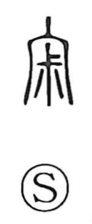

寂

Kun: sabishii, sabireru, sabi, shizuka | On: jaku, seki
lonely ・ lonesome ・ calm ・ quiet
Explanation
A phono-semantic graph: under the roof radical, which here evokes the ancestral mausoleum, stands the phonetic 叔 (shuku), whose ancient form depicts the head of a broadax held in the hand and the pale gleam of its blade. The character thus pictures the head of that sacred weapon enshrined in the ancestral hall to pacify the spirits. The scene—an empty shrine where only the whitish shine of the blade remains—conveys a hush in which no human voice is heard, giving the word its sense of serene stillness and, by extension, loneliness.